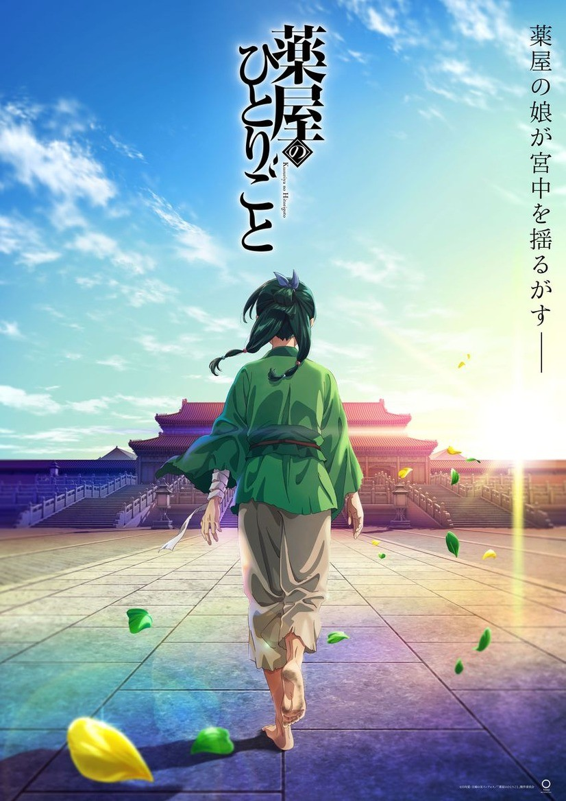
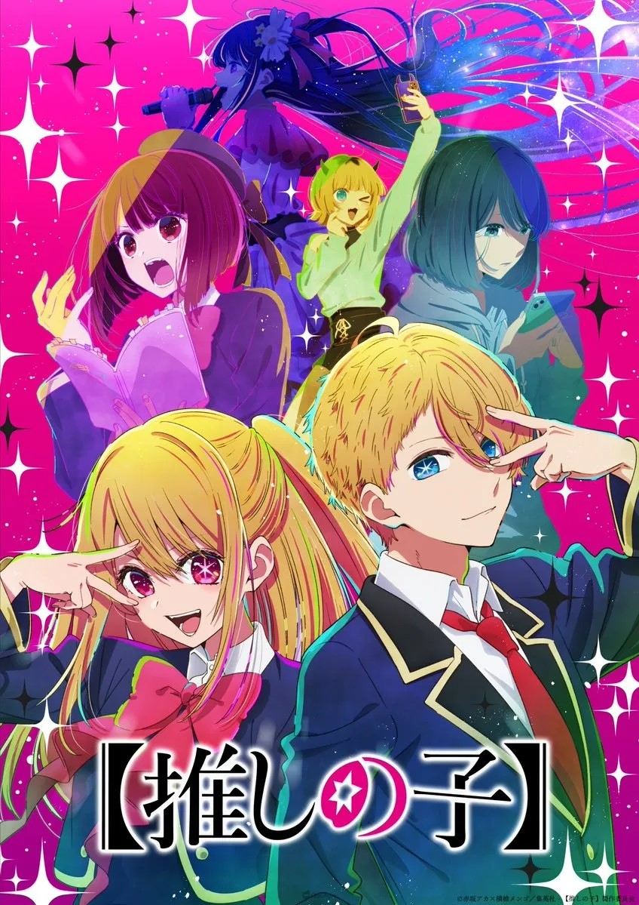
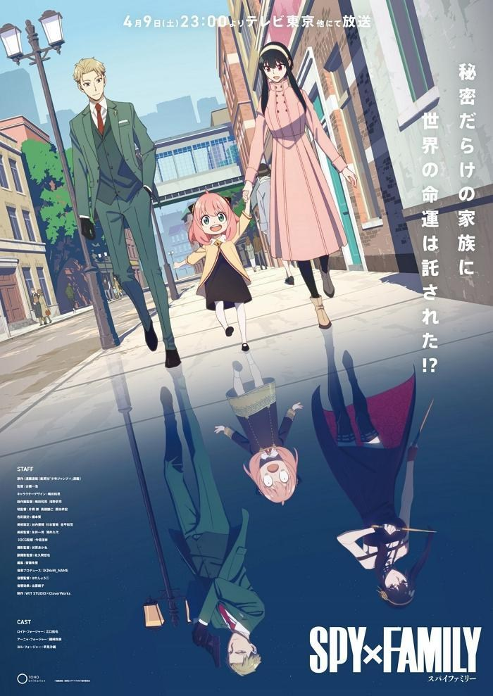

站主推薦
薬屋のひとりごと

「藥師少女的獨語(藥屋少女的呢喃)」是日向夏連載中的偵探歷史輕小說改編漫畫。位於大陸中央的某大國，原在花街從事藥師工作的少女「貓貓」，被賣進宮中成為下女。得知了皇帝的年幼御子們一一早夭的傳聞，以自身的藥學知識解開了早夭之謎、挽救了御子的性命，得到後宮統領者「壬氏」的賞識，成為皇妃身邊的試毒者。在好奇心與求知慾的驅使下，藥學狂人貓貓將宮中發生的懸疑事件接連解決。官方網站連結：薬屋のひとりごと-Twitter
關鍵字:漫畫改編
【推しの子】

我推的孩子，漫畫改編動畫。由赤坂明與橫槍萌果所作。「在演藝圈（這個世界）裡，謊言就是武器。」在地方都市的婦產科當醫生的「五郎」過著與演藝圈無緣的每一天。另一邊，他所推崇的偶像「B小町」的「星野愛（小愛）」則在明星之路上飛黃騰達。某一天，他所推的偶像小愛突然出現在他眼前。她身上還藏著個禁斷的秘密。這樣的兩人在「最糟」的情況下相遇，他們的命運開始轉動…！？官方網站連結：アニメ『【推しの子】』公式サイト
關鍵字:漫畫改編
SPY×FAMILY

SPY×FAMILY間諜家家酒，漫畫改編動畫。由遠藤達哉所作。每一個人都擁有不想讓任何人看見得自己的一面―― 位在世界各國於檯面下進行激烈情報戰的時代。東國與西國已經維持了數十年的冷戰狀態。所屬西國情報局對東課 官方網站連結：アニメ『SPY×FAMILY』
關鍵字:漫畫改編